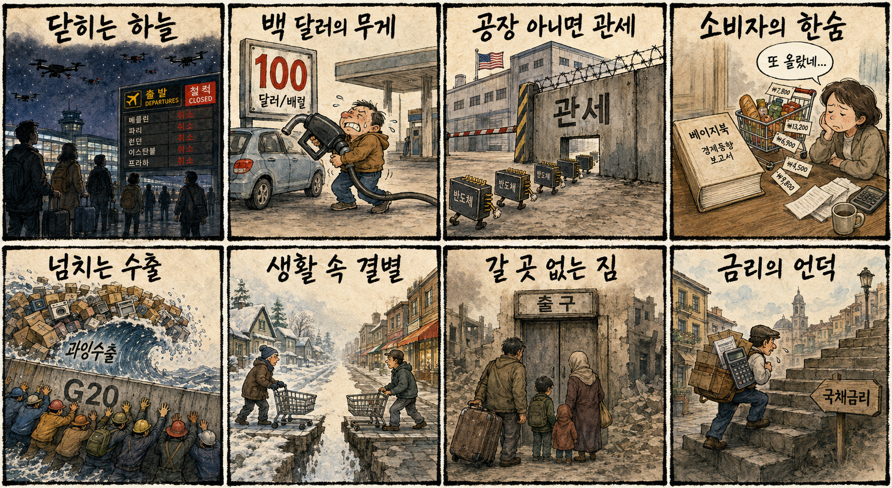
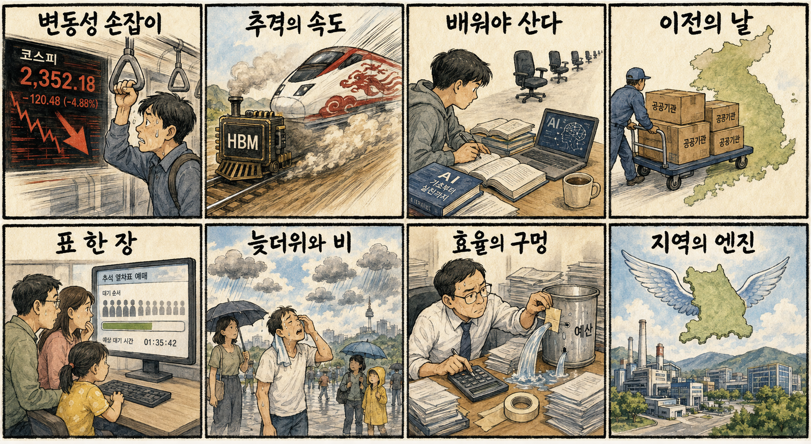

01
크라우드스트라이크 · 214.35→203.42달러 · -5.10%
내용요약 시가 대비 5.10% 하락하며 추적 종목 중 낙폭이 가장 두드러졌습니다.
예상여파 국내 보안·소프트웨어주에도 단기 밸류에이션 경계 심리를 줄 수 있습니다.
MORNING_BRIEFING_20260903
작성 시각: 2026-09-03 06:40 KST · 직전 미국 정규장과 2026-09-03 KST 당일 공개 기사 기준
직전 미국 정규장인 9월 2일에는 다우 +0.56%, S&P 500 +0.46%, 나스닥 +0.45%로 반등했습니다. 마이크론 +2.71%, 엔비디아 +2.57%, 메타 +2.29%가 시가 대비 강했지만 크라우드스트라이크 -5.10%, 팔란티어 -4.26%로 소프트웨어 일부는 약했습니다. 다만 국제유가 100달러와 미국의 반도체 표적관세 예고는 한국 증시 반등 폭을 제한할 위험입니다.
| 지수 | 종가 | 등락률 | 한국 증시 시사점 |
|---|---|---|---|
| 다우존스 | 53,061.95 | +0.56% | 경기 우려 완충 |
| S&P 500 | 7,666.60 | +0.46% | 기술주 심리 완충 |
| 나스닥 종합 | 26,217.83 | +0.45% | 기술주 심리 완충 |
미국 기술주가 반등했지만 종목별 차별화는 컸습니다.
수입물가와 운송·화학 원가에 다시 강한 경계 신호입니다.
시가 대비 -0.95%로 밀리며 대형 반도체도 약세였습니다.
관세·유가·수급 변동 속 검증 문턱을 통과한 후보가 없습니다.
9월 2일 보고서는 검증 문턱을 통과한 후보가 없어 공식 추천을 내지 않았습니다. 게시 당시 판단은 그대로 유지되며 사후 종목을 추가하지 않습니다.
| 시장 | 종가 | 등락률 | 해석 |
|---|---|---|---|
| KOSPI | 6,562.72 | -3.99% | 1일 시가 대비 -0.95% |
| KOSDAQ | 803.98 | -2.10% | 1일 시가 대비 +0.15% |
| 다우존스 | 53,061.95 | +0.56% | 경기 우려 완충 |
| S&P 500 | 7,666.60 | +0.46% | 기술주 심리 완충 |
| 나스닥 종합 | 26,217.83 | +0.45% | 기술주 심리 완충 |
마이크론 +2.71%, 엔비디아 +2.57%로 시가 대비 상승했습니다.
오라클이 시가 대비 +3.91%로 강했습니다.
크라우드스트라이크가 시가 대비 -5.10% 하락했습니다.
팔란티어가 시가 대비 -4.26%로 밀렸습니다.
내용요약 시가 대비 5.10% 하락하며 추적 종목 중 낙폭이 가장 두드러졌습니다.
예상여파 국내 보안·소프트웨어주에도 단기 밸류에이션 경계 심리를 줄 수 있습니다.
내용요약 시가 대비 4.26% 하락해 지수 반등과 반대 방향의 약세를 보였습니다.
예상여파 고평가 AI 소프트웨어 종목의 변동성 확대는 국내 테마주의 추격매수 위험을 높입니다.
내용요약 시가 대비 3.91% 상승하며 기업용 소프트웨어 내 상대강도를 보였습니다.
예상여파 클라우드 인프라 수요 기대가 유지되면 국내 데이터센터 연결업종 심리에 완충 요인이 될 수 있습니다.
내용요약 시가 대비 2.71% 상승해 메모리 반도체의 강세가 두드러졌습니다.
예상여파 국내 메모리 대형주 심리에 긍정적이지만 반도체 관세와 중국 추격 뉴스는 별도 위험입니다.
내용요약 시가 대비 2.57% 상승하며 나스닥 반등을 이끌었습니다.
예상여파 AI 가속기 수요는 국내 HBM 연결고리에 우호적이나 유가·관세 변수가 상승폭을 제한할 수 있습니다.
미국 지수 반등과 마이크론·엔비디아 강세는 전일 급락한 국내 반도체의 기술적 반등에 도움을 줄 수 있습니다. 그러나 국제유가 100달러, 미국의 반도체 표적관세, 중국 메모리 추격은 원화와 대형 수출주에 동시에 부담입니다. 직전 거래일 KOSPI는 시가 대비 -0.95%였고 KOSDAQ은 +0.15%였습니다. 개장 초 외국인 선물, 원화, 반도체 대형주의 갭 유지 여부를 확인하기 전 추격매수를 피합니다.
오늘은 추천 없음 — 현금 관망
유가 급등과 지수 변동성 속에서 전일까지의 외국인·기관 수급, 컨센서스 변화, 30건 이상 유사 조건 확률 보정, 예상 손익비 1.5 이상을 동시에 검증한 종목이 없습니다. 종합점수와 상승확률을 임의로 만들지 않습니다.
관심 연결종목 메모리 반도체, 정유, 사이버보안은 뉴스 연결 관찰 대상일 뿐 매수 추천이 아닙니다. 개장 초 갭 상승 종목은 추격매수 금지입니다.
에너지 수입 부담이 외국인 선물과 원화에 미치는 영향을 봅니다.
미국 생산 감면 조건과 국내 기업의 추가 투자 부담을 점검합니다.
행정·공공기관 대상과 기능 개편안의 구체성을 확인합니다.
전국 소나기와 큰 일교차에 맞춰 교통·야외 안전을 점검합니다.
핵심 요약: AI 인프라 경쟁의 병목은 1GW급 전력과 계통으로 이동하고 있습니다. 개인 AI 비서 투자는 커지는 반면 중국의 HBM·낸드 추격과 현장 로봇 상용화가 국내 기술·제조 생태계에 속도전을 요구합니다.
내용요약 AI 데이터센터 전력을 장기 구매계약으로 확보하는 PPA가 해법으로 거론되지만 제도 보완이 시급하다는 당일 보도입니다.
예상여파 전력 조달 비용과 계통 접속 규칙이 컴퓨팅센터의 입지·가동률을 좌우해 발전·송전 투자와 데이터센터 사업성에 함께 영향을 줄 수 있습니다.
내용요약 10조원 규모 해남 국가 AI 컴퓨팅센터 착공 계획과 1GW급 전력 조달 과제를 짚은 정책 분석입니다.
예상여파 대규모 AI 인프라가 현실화되려면 발전원뿐 아니라 송전망·냉각·지역 수용성까지 묶은 실행계획이 필요합니다.
내용요약 개인 AI 비서 스타트업 인스팅트가 2억5000만달러를 유치해 기업가치 25억달러로 평가됐다는 보도입니다.
예상여파 에이전트형 AI가 앱 사용과 업무 흐름을 대체할 수 있다는 기대가 커지며 개인 데이터 보호와 플랫폼 주도권 경쟁도 심해질 수 있습니다.
내용요약 인력 부족이 심한 현장에서 실제 작업을 수행하는 로봇의 가치가 높아지고 있다는 산업 보도입니다.
예상여파 피지컬 AI의 수요가 데모에서 생산성 개선으로 이동하면 센서·제어기·감속기·현장 데이터 기업의 검증 기회가 늘어날 수 있습니다.
내용요약 중국 메모리 업체가 HBM과 낸드까지 기술 추격 속도를 높이고 있다는 당일 보도입니다.
예상여파 국내 메모리사의 선단 공정·패키징 투자 압력이 커지고 범용 제품에서는 가격 경쟁이 더 빨리 재개될 위험이 있습니다.
핵심 요약: 국제유가 100달러, 미국 반도체 표적관세, 베이지북의 소비 부담 진단이 세계 경제의 핵심 변수입니다. 키이우 공습이 장기화하고 G20 다수국은 중국 과잉수출에 공동 대응하며 안보와 무역 장벽이 함께 높아지고 있습니다.
내용요약 러시아가 7일 연속 우크라이나 수도 키이우를 공격해 최소 12명이 숨졌다는 VOA 한국어 보도입니다.
예상여파 장기 공습이 민간 피해와 전력·교통 복구 비용을 키우고 항공·곡물 물류와 휴전 기대에도 부담을 줄 수 있습니다.
내용요약 중동 충돌 속 국제유가가 배럴당 100달러를 넘어섰다는 당일 보도입니다.
예상여파 에너지 수입국의 물가와 무역수지가 악화되고 항공·화학·운송업의 원가 압력이 커져 금리 인하 여력도 줄 수 있습니다.
내용요약 미국 상무장관이 미국 안에서 생산하지 않는 반도체를 겨냥한 표적 관세를 예고했습니다.
예상여파 글로벌 반도체 공급망의 미국 현지투자는 빨라질 수 있으나 국내 기업에는 투자비와 관세 불확실성이 동시에 커질 수 있습니다.
내용요약 연준 베이지북이 이란 전쟁과 관세발 가격 상승으로 미국 소비자가 부담을 느낀다고 진단했습니다.
예상여파 소비 둔화와 물가 상승이 함께 나타나면 통화정책 선택이 어려워지고 장기금리·달러 변동성이 확대될 수 있습니다.
내용요약 중국을 뺀 G20 19개국이 중국의 과잉수출 문제를 공동 압박한다는 보도입니다.
예상여파 철강·배터리·태양광 등에서 무역장벽이 넓어지며 제3국 우회수출과 공급망 재편이 가속할 수 있습니다.

핵심 요약: 중국의 메모리 추격과 AI발 고용 재편이 산업·일자리의 동시 과제로 떠올랐습니다. 오늘은 공공기관 지방 이전 계획, 추석 열차표 예매, 전국 소나기와 늦더위가 정책·생활의 주요 일정입니다.
내용요약 중국 반도체 기업의 HBM·낸드 기술 추격이 국내 메모리 산업에 상당한 위협이 된다는 당일 보도입니다.
예상여파 국내 기업은 고부가 제품 격차를 유지하는 동시에 범용 메모리의 가격 하락과 고객 다변화에 대비해야 합니다.
내용요약 AI가 일부 일자리를 줄이는 가운데 취업 경쟁력을 위해 다시 AI를 배워야 하는 역설을 다룬 보도입니다.
예상여파 직무 전환 교육의 접근성과 현장 활용 능력이 고용 격차를 좌우하고 기업의 재교육 비용도 커질 수 있습니다.
내용요약 정부가 행정·공공기관 지방 이전 계획과 기능 개편안을 오늘 발표한다는 당일 보도입니다.
예상여파 이전 대상과 일정에 따라 지역 부동산·교통·인재 수급이 움직일 수 있으며 기관 기능 조정의 실효성이 관건입니다.
내용요약 오늘부터 추석 열차표 예매가 시작되며 교통약자 우선 뒤 일반 국민 순으로 진행된다는 안내입니다.
예상여파 초기 접속 혼잡과 매진 가능성이 커 예약 시간·대상 노선을 미리 확인할 필요가 있습니다.
내용요약 전국 곳곳에 비나 소나기가 내리고 낮에는 늦더위가 이어질 것이라는 당일 기상 보도입니다.
예상여파 출근길 미끄럼과 국지성 호우, 큰 일교차에 대비하고 야외 작업자는 온열질환 관리도 병행해야 합니다.
